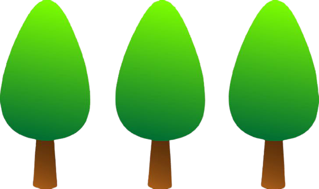
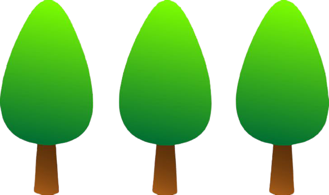
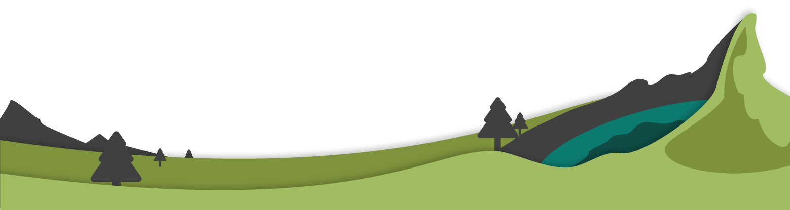

I'm Mayur Kanojiya
I'm a Web developer

I'm a Web developer


I'm Mayur kanojiya
Aiming to leverage acquired academic knowledge and proven technical, teamwork, and problem-solving skills to successfully fill the Software Engineer role at your company. Frequently praised as hard-working by my peers, I can be relied upon to help your company achieve its goals.
I have developed few web pages using HTML5, CSS3 and JS. I'm still learning JS and few more web technologies. I like learning and I'm fascinate of web developing and I will Be.
Formulated two games using Python 3, 1. Tic Toc Toe for two players, where players can decide their marker between 'X' or 'O' and then by choosing the position between 1-9 Python will places their marker on the Tic Toc Toe board. After three moves, Then the game logic which is formulated in Python decides the winner. 2. Card War for single player, this game is played between computer and player, where deck of cards will be divided evenly between player and computer and the card war starts, the player which has more cards wins.
I have completed a project using IoT technology, Home Automation System, where my team and me develop a home automation system using an Arduino UNO board with any Android OS smart phone. Modern houses are gradually shifting from conventional switches to centralized control system. So this system is to control the home appliances easily using mobile phone.

By using LabView, my team and me completed two project, 1. Dual Priority Encoder, In case of dual priority encoder, the circuit gives two priority outputs which are 1st highest priority and 2nd highest priority. This can be used in personal computers to connect more input devices externally such as pen drives, keyboards, joysticks etc. 2. Patient Monitoring System, Where we used sensors like ECG sensor, temperature sensor and pulse sensor which were connected to My Rio using LabVIEW.
 mayurkanojiya77@gmail.com
mayurkanojiya77@gmail.com


© 2020 Mayur Kanojiya
